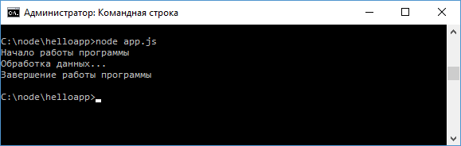

Асинхронность в Node.js
Асинхронность представляет возможность одновременно выполнять сразу несколько задач. Асинхронность играет большую роль в Node.js. Например, допустим в файле приложения app.js у нас расположен следующий код:
function
displaySync(data){
console.log(data);
}
console.log("Начало работы программы");
displaySync("Обработка
данных...");
console.log("Завершение работы программы");
Это стандартный синхронный код, все вызовы здесь выполняются последовательно, что мы можем увидеть, если мы запустим приложение:

Для рассмотрения асинхронности изменим код файла app.js следующим образом:
function
display(data, callback){
// с
помощью случайного числа определяем ошибку
var randInt = Math.random() * (10
- 1) + 1;
var err = randInt>5?
new Error("Ошибка выполнения. randInt больше 5"): null;
setTimeout(function(){
callback(err, data);
}, 0);
}
console.log("Начало работы программы");
display("Обработка
данных...", function (err, data){
if(err) throw
err;
console.log(data);
});
В начале также определяется функция display, но
теперь кроме данных в качестве второго параметра она принимает функцию обратного
вызова, которая и обрабатывает данные.
Эта функция callback принимает два
параметра - информацию об ошибке и собственно данные. Это общая модель функций
обратного вызова, которые передаются в асинхронные методы - первым идет
параметр, представляющий ошибку, а второй - данные.
Для имитации ошибки
используется случайное число: если оно больше 5, то создаем объект ошибки -
объект Error, иначе же он равен null.
И последний важный момент -
выполнение функции обратного вызова в функции setTimeout(). Это глобальная
функция, которая принимает в качестве первого параметра функцию обратного
вызова, а в качестве второго - промежуток, через который функция обратного
вызова будет выполняться. Для нашей задачи вполне подойдет промежуток в 0
миллисекунд.
Назад: Объект global и глобальные переменные | Далее: Ассинхронность js стр.2